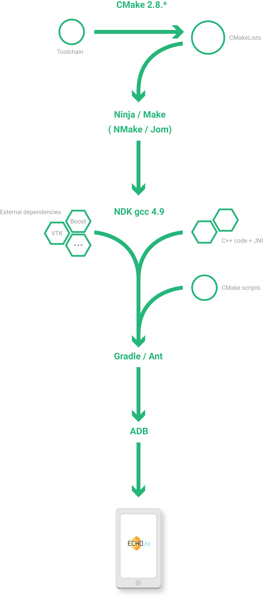

Advanced Android Development
Next level with C++
Frederic CHAMP
Android development Overview :
Accessible language: Java
Easy for cross-platform development
Great and well documented Android Java API
But ...
In our case :
Nobody is a Java/Android expert
Small team
We are working with a C++ framework fw4spl
characteristics:
Object/services design
Component based
Developed in C++
Applications built in XML
Multi platforms
Depends on many open source libraries: boost, VTK, ...
statistics :
Applications: 35 (PoC and Tutorials)
Bundles: 52 (57 on private repository)
Service number: 230 (380)
Code line numbers: + 220 000
fw4spl history:
2004-2007 : fw4spl project
2007-2009 : VRRender 0.7 (free)
09/2009 : fw4spl became open-source (LGPL)
2010 : PoC Sofa (Altran-Est), VRRender WLE 0.8.1 (free)
2011 : PoC Kinect (Altran-Est), VRRender 0.9 (open)
2012 : Introduction of multithreading
2013 : Creation of a board (IRCAD, IHU, Visible Patient)
2013 : Creation of fw4spl external repository
2014 : Switch to CMake for building
2014 : Creation of GitHub and Bitbucket repositories
2014 : Partial Android support
2015 : Documentation generated on ReadTheDocs.org
2015 : Creation of a blog for developers

How to use this C++ framework on
Android ?
Environment :
Android :
Android SDK: r21 API 19 -> (boost issues)
Android NDK: r10e
APK generators: Gradle and Ant
C++ (11):
Buidl tool: CMake
Toolchain: Forked from taka-no-me one's (GitHub)
Compiler: gcc 4.9 provided by the NDK
Debugger: ...
Workflow :
Contacts :
frederic.champ@ircad.fr github.com/FredChamp @frdChamp